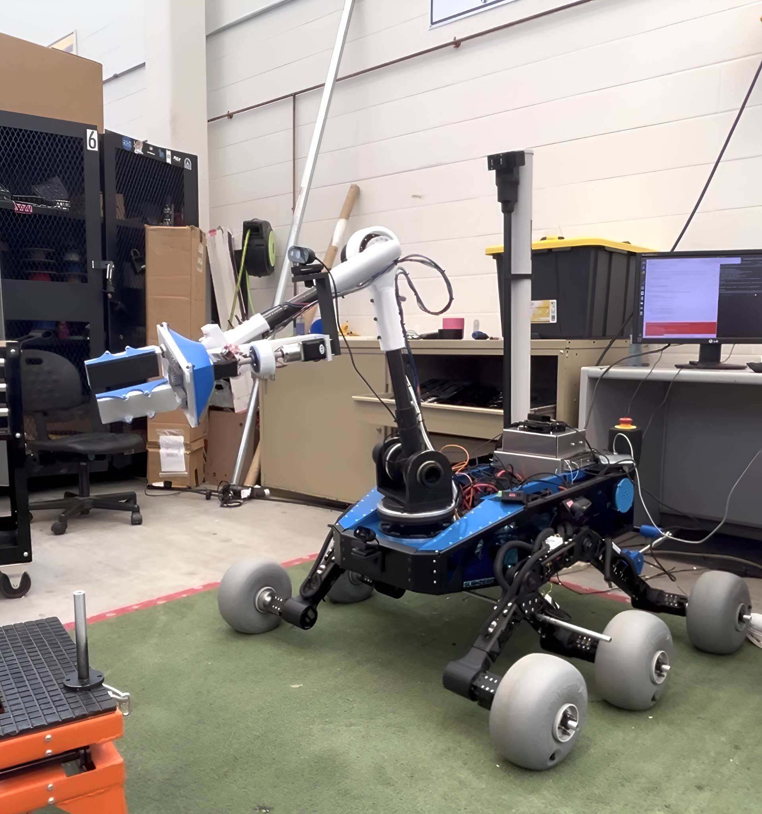

PROJECT 01 / ELECTROMECHANICAL CONTROLS

ROBOTIC ARM DEMONSTRATION
CAPSTONECONTROL SYSTEMS
Robotic Arm
Control Systems
Collaborated on the electrical and controls integration of a robotic arm for a university rover project, working within a two-person controls subteam.
- Integrated BLDC motors, motor controllers, encoders, wiring, and communication interfaces.
- Investigated controller faults, power issues, encoder feedback, and CAN communication.
- Performed component-level and system-level testing and supported URDF modeling.
MOTOR CONTROL · ENCODERS · CAN · ROS 2